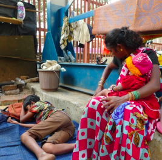

Aruna
and her four children make their home beneath a bridge in Mumbai. Aruna makes under a dollar a day selling flower garlands, barely enough to cover sanitation costs. Her husband could earn at most $10 a week. The children works from 6 to 10 on weekdays and longer on weekends to try to bring food on their plates, because some days they go without breakfast or dinner. At night, Nadya stays awake for fear of drunks doing harm to her. Nadya and her family lives in constant fear of displacement, confiscation and unemployment.
This is What Poverty Looks Like.
Overview
The eradication of poverty in all its forms remains one of the greatest challenges facing humanity. Despite the immense progress we have made in lifting people out of extreme poverty, too many around the world are still struggling for the most basic human needs.
UN reports that more than 3 billion people - nearly 1/2 of the worlds of population - live on less than $2.50 a day. These people suffer from regular shortages of food, clean drinking water and sanitation. While economic growth in developing countries such as China and India has faced rapid economic growth, progress has largely been uneven among social classes. In particular, women are likely to receive less paid work, education and own less property. In other regions such as South Asia and sub-Saharan Africa, where 80% of the those in extreme poverty live, progress has also been very limited. Not to mention that new threats brought on by climate change, conflict and food insecurity, mean even more work is needed to bring people out of poverty.
The SDGs are a bold commitment to end poverty in all forms and dimensions by 2030. This means taking responsibility to target the most vulnerable, increase basic resources and services, and support communities affected by conflict and climate-related disasters. And it takes all of us to achieve it.
Facts & Figures
10%
10 percent of the world's population live in extreme poverty, down from 36 percent in 1990
1.3 billion
Some 1.3 billion people live in multidimensional poverty.
1 in 2
1 in 2 of the world's population live on less than $2.50 a day
1/4
1/4 of all humans live without access to electricity — that is almost 1.6 billion people, reports the UN
#1
The WFP claims starvation as the number one cause of death in the world, which traps the poor in an almost inescapable cycle of hunger and poverty